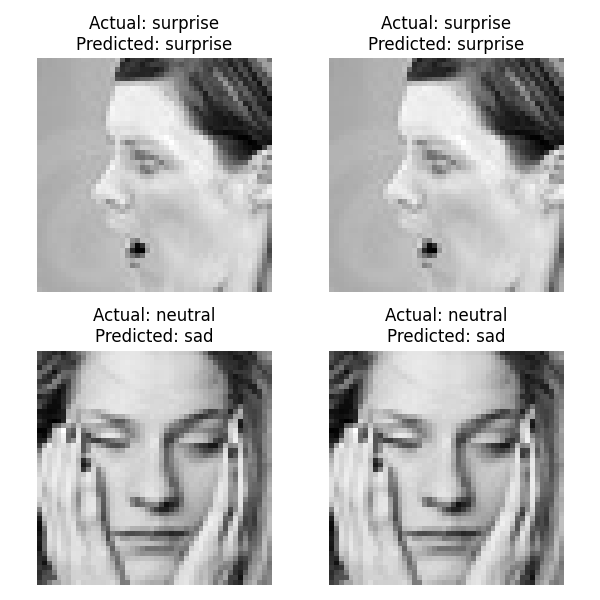

        <html>
        <head><title>Model Summary - 2024-04-10 13:37:50</title></head>
        <body>
        <h1>Model Configuration</h1>
        <pre>model:
  compile:
    learning_rate: 0.01
    optimizer: Adam
    optimizer_name: adam
  data:
    color_layers: 1
    color_mode: grayscale
    img_height: 48
    img_width: 48
    use_data_loaders: true
  layers:
  - filters: 64
    kernel_size:
    - 2
    - 2
    padding: same
    type: Conv2D
  - type: BatchNormalization
  - alpha: 0.1
    type: LeakyReLU
  - pool_size:
    - 2
    - 2
    type: MaxPooling2D
  - filters: 128
    kernel_size:
    - 2
    - 2
    padding: same
    type: Conv2D
  - type: BatchNormalization
  - alpha: 0.1
    type: LeakyReLU
  - pool_size:
    - 2
    - 2
    type: MaxPooling2D
  - filters: 256
    kernel_size:
    - 2
    - 2
    padding: same
    type: Conv2D
  - type: BatchNormalization
  - alpha: 0.1
    type: LeakyReLU
  - pool_size:
    - 2
    - 2
    type: MaxPooling2D
  - filters: 512
    kernel_size:
    - 2
    - 2
    padding: same
    type: Conv2D
  - type: BatchNormalization
  - alpha: 0.1
    type: LeakyReLU
  - pool_size:
    - 2
    - 2
    type: MaxPooling2D
  - filters: 128
    kernel_size:
    - 2
    - 2
    padding: same
    type: Conv2D
  - type: BatchNormalization
  - alpha: 0.1
    type: LeakyReLU
  - pool_size:
    - 2
    - 2
    type: MaxPooling2D
  - type: Flatten
  - activation: relu
    type: Dense
    units: 512
  - activation: relu
    type: Dense
    units: 128
  - type: Dense
    units: 64
  - type: BatchNormalization
  - type: ReLU
  - activation: softmax
    type: Dense
    units: 4
  train:
    batch_size: 32
    epochs: 40
    patience: 7
</pre>
        <h1>Model Summary</h1>
        <pre>Model: "sequential"
┏━━━━━━━━━━━━━━━━━━━━━━━━━━━━━━━━━━━━━━┳━━━━━━━━━━━━━━━━━━━━━━━━━━━━━┳━━━━━━━━━━━━━━━━━┓
┃ Layer (type)                         ┃ Output Shape                ┃         Param # ┃
┡━━━━━━━━━━━━━━━━━━━━━━━━━━━━━━━━━━━━━━╇━━━━━━━━━━━━━━━━━━━━━━━━━━━━━╇━━━━━━━━━━━━━━━━━┩
│ conv2d (Conv2D)                      │ (None, 48, 48, 64)          │             320 │
├──────────────────────────────────────┼─────────────────────────────┼─────────────────┤
│ batch_normalization                  │ (None, 48, 48, 64)          │             256 │
│ (BatchNormalization)                 │                             │                 │
├──────────────────────────────────────┼─────────────────────────────┼─────────────────┤
│ leaky_re_lu (LeakyReLU)              │ (None, 48, 48, 64)          │               0 │
├──────────────────────────────────────┼─────────────────────────────┼─────────────────┤
│ max_pooling2d (MaxPooling2D)         │ (None, 24, 24, 64)          │               0 │
├──────────────────────────────────────┼─────────────────────────────┼─────────────────┤
│ conv2d_1 (Conv2D)                    │ (None, 24, 24, 128)         │          32,896 │
├──────────────────────────────────────┼─────────────────────────────┼─────────────────┤
│ batch_normalization_1                │ (None, 24, 24, 128)         │             512 │
│ (BatchNormalization)                 │                             │                 │
├──────────────────────────────────────┼─────────────────────────────┼─────────────────┤
│ leaky_re_lu_1 (LeakyReLU)            │ (None, 24, 24, 128)         │               0 │
├──────────────────────────────────────┼─────────────────────────────┼─────────────────┤
│ max_pooling2d_1 (MaxPooling2D)       │ (None, 12, 12, 128)         │               0 │
├──────────────────────────────────────┼─────────────────────────────┼─────────────────┤
│ conv2d_2 (Conv2D)                    │ (None, 12, 12, 256)         │         131,328 │
├──────────────────────────────────────┼─────────────────────────────┼─────────────────┤
│ batch_normalization_2                │ (None, 12, 12, 256)         │           1,024 │
│ (BatchNormalization)                 │                             │                 │
├──────────────────────────────────────┼─────────────────────────────┼─────────────────┤
│ leaky_re_lu_2 (LeakyReLU)            │ (None, 12, 12, 256)         │               0 │
├──────────────────────────────────────┼─────────────────────────────┼─────────────────┤
│ max_pooling2d_2 (MaxPooling2D)       │ (None, 6, 6, 256)           │               0 │
├──────────────────────────────────────┼─────────────────────────────┼─────────────────┤
│ conv2d_3 (Conv2D)                    │ (None, 6, 6, 512)           │         524,800 │
├──────────────────────────────────────┼─────────────────────────────┼─────────────────┤
│ batch_normalization_3                │ (None, 6, 6, 512)           │           2,048 │
│ (BatchNormalization)                 │                             │                 │
├──────────────────────────────────────┼─────────────────────────────┼─────────────────┤
│ leaky_re_lu_3 (LeakyReLU)            │ (None, 6, 6, 512)           │               0 │
├──────────────────────────────────────┼─────────────────────────────┼─────────────────┤
│ max_pooling2d_3 (MaxPooling2D)       │ (None, 3, 3, 512)           │               0 │
├──────────────────────────────────────┼─────────────────────────────┼─────────────────┤
│ conv2d_4 (Conv2D)                    │ (None, 3, 3, 128)           │         262,272 │
├──────────────────────────────────────┼─────────────────────────────┼─────────────────┤
│ batch_normalization_4                │ (None, 3, 3, 128)           │             512 │
│ (BatchNormalization)                 │                             │                 │
├──────────────────────────────────────┼─────────────────────────────┼─────────────────┤
│ leaky_re_lu_4 (LeakyReLU)            │ (None, 3, 3, 128)           │               0 │
├──────────────────────────────────────┼─────────────────────────────┼─────────────────┤
│ max_pooling2d_4 (MaxPooling2D)       │ (None, 1, 1, 128)           │               0 │
├──────────────────────────────────────┼─────────────────────────────┼─────────────────┤
│ flatten (Flatten)                    │ (None, 128)                 │               0 │
├──────────────────────────────────────┼─────────────────────────────┼─────────────────┤
│ dense (Dense)                        │ (None, 512)                 │          66,048 │
├──────────────────────────────────────┼─────────────────────────────┼─────────────────┤
│ dense_1 (Dense)                      │ (None, 128)                 │          65,664 │
├──────────────────────────────────────┼─────────────────────────────┼─────────────────┤
│ dense_2 (Dense)                      │ (None, 64)                  │           8,256 │
├──────────────────────────────────────┼─────────────────────────────┼─────────────────┤
│ batch_normalization_5                │ (None, 64)                  │             256 │
│ (BatchNormalization)                 │                             │                 │
├──────────────────────────────────────┼─────────────────────────────┼─────────────────┤
│ re_lu (ReLU)                         │ (None, 64)                  │               0 │
├──────────────────────────────────────┼─────────────────────────────┼─────────────────┤
│ dense_3 (Dense)                      │ (None, 4)                   │             260 │
└──────────────────────────────────────┴─────────────────────────────┴─────────────────┘
 Total params: 1,096,452 (4.18 MB)
 Trainable params: 1,094,148 (4.17 MB)
 Non-trainable params: 2,304 (9.00 KB)
</pre>
        <h2>Test Accuracy</h2>
        <p>
1/4 ━━━━━━━━━━━━━━━━━━━━ 0s 16ms/step - accuracy: 0.9062 - loss: 0.2966
4/4 ━━━━━━━━━━━━━━━━━━━━ 0s 4ms/step - accuracy: 0.8313 - loss: 0.4627 

1/4 ━━━━━━━━━━━━━━━━━━━━ 1s 549ms/step
4/4 ━━━━━━━━━━━━━━━━━━━━ 1s 3ms/step  
</p>
        <h2>Accuracy Plot</h2>
        
        <h2>Classification Report</h2>
        <pre>              precision    recall  f1-score   support

       happy       0.83      0.91      0.87        32
     neutral       0.69      0.78      0.74        32
         sad       0.75      0.66      0.70        32
    surprise       1.00      0.91      0.95        32

    accuracy                           0.81       128
   macro avg       0.82      0.81      0.81       128
weighted avg       0.82      0.81      0.81       128

</pre>
        <h2>History</h2>
        <pre>Epoch 1: accuracy: 0.3013, loss: 1.3808, val_accuracy: 0.2381, val_loss: 1.7086, learning_rate: 0.0100
Epoch 2: accuracy: 0.3978, loss: 1.2220, val_accuracy: 0.4758, val_loss: 1.1918, learning_rate: 0.0100
Epoch 3: accuracy: 0.5041, loss: 1.0797, val_accuracy: 0.5471, val_loss: 1.0083, learning_rate: 0.0100
Epoch 4: accuracy: 0.5665, loss: 0.9809, val_accuracy: 0.2861, val_loss: 1.6772, learning_rate: 0.0100
Epoch 5: accuracy: 0.6092, loss: 0.9105, val_accuracy: 0.5550, val_loss: 1.0270, learning_rate: 0.0100
Epoch 6: accuracy: 0.6349, loss: 0.8651, val_accuracy: 0.6393, val_loss: 0.8765, learning_rate: 0.0100
Epoch 7: accuracy: 0.6431, loss: 0.8405, val_accuracy: 0.6860, val_loss: 0.7618, learning_rate: 0.0100
Epoch 8: accuracy: 0.6641, loss: 0.8175, val_accuracy: 0.6556, val_loss: 0.8516, learning_rate: 0.0100
Epoch 9: accuracy: 0.6671, loss: 0.8050, val_accuracy: 0.6787, val_loss: 0.8178, learning_rate: 0.0100
Epoch 10: accuracy: 0.6764, loss: 0.7831, val_accuracy: 0.6580, val_loss: 0.8719, learning_rate: 0.0100
Epoch 11: accuracy: 0.6780, loss: 0.7758, val_accuracy: 0.6691, val_loss: 0.8602, learning_rate: 0.0100
Epoch 12: accuracy: 0.6846, loss: 0.7704, val_accuracy: 0.7046, val_loss: 0.7405, learning_rate: 0.0100
Epoch 13: accuracy: 0.6947, loss: 0.7455, val_accuracy: 0.6727, val_loss: 0.7794, learning_rate: 0.0100
Epoch 14: accuracy: 0.6904, loss: 0.7464, val_accuracy: 0.6801, val_loss: 0.7494, learning_rate: 0.0100
Epoch 15: accuracy: 0.7039, loss: 0.7207, val_accuracy: 0.7133, val_loss: 0.7159, learning_rate: 0.0100
Epoch 16: accuracy: 0.6989, loss: 0.7335, val_accuracy: 0.6675, val_loss: 0.8070, learning_rate: 0.0100
Epoch 17: accuracy: 0.7008, loss: 0.7264, val_accuracy: 0.7133, val_loss: 0.7100, learning_rate: 0.0100
Epoch 18: accuracy: 0.7098, loss: 0.7100, val_accuracy: 0.7249, val_loss: 0.6846, learning_rate: 0.0100
Epoch 19: accuracy: 0.7133, loss: 0.7048, val_accuracy: 0.6779, val_loss: 0.8182, learning_rate: 0.0100
Epoch 20: accuracy: 0.7179, loss: 0.6975, val_accuracy: 0.7229, val_loss: 0.7007, learning_rate: 0.0100
Epoch 21: accuracy: 0.7173, loss: 0.6931, val_accuracy: 0.7320, val_loss: 0.6628, learning_rate: 0.0100
Epoch 22: accuracy: 0.7274, loss: 0.6776, val_accuracy: 0.7169, val_loss: 0.7046, learning_rate: 0.0100
Epoch 23: accuracy: 0.7263, loss: 0.6770, val_accuracy: 0.7267, val_loss: 0.6843, learning_rate: 0.0100
Epoch 24: accuracy: 0.7305, loss: 0.6692, val_accuracy: 0.7428, val_loss: 0.6466, learning_rate: 0.0100
Epoch 25: accuracy: 0.7286, loss: 0.6706, val_accuracy: 0.7221, val_loss: 0.6915, learning_rate: 0.0100
Epoch 26: accuracy: 0.7347, loss: 0.6632, val_accuracy: 0.7484, val_loss: 0.6331, learning_rate: 0.0100
Epoch 27: accuracy: 0.7350, loss: 0.6557, val_accuracy: 0.6876, val_loss: 0.7548, learning_rate: 0.0100
Epoch 28: accuracy: 0.7409, loss: 0.6466, val_accuracy: 0.7219, val_loss: 0.6693, learning_rate: 0.0100
Epoch 29: accuracy: 0.7362, loss: 0.6490, val_accuracy: 0.7398, val_loss: 0.6520, learning_rate: 0.0100
Epoch 30: accuracy: 0.7386, loss: 0.6436, val_accuracy: 0.7460, val_loss: 0.6450, learning_rate: 0.0100
Epoch 31: accuracy: 0.7410, loss: 0.6391, val_accuracy: 0.7430, val_loss: 0.6449, learning_rate: 0.0100
Epoch 32: accuracy: 0.7639, loss: 0.5968, val_accuracy: 0.7713, val_loss: 0.5730, learning_rate: 0.0020
Epoch 33: accuracy: 0.7691, loss: 0.5770, val_accuracy: 0.7701, val_loss: 0.5711, learning_rate: 0.0020
Epoch 34: accuracy: 0.7727, loss: 0.5705, val_accuracy: 0.7503, val_loss: 0.6154, learning_rate: 0.0020
Epoch 35: accuracy: 0.7733, loss: 0.5620, val_accuracy: 0.7611, val_loss: 0.5934, learning_rate: 0.0020
Epoch 36: accuracy: 0.7732, loss: 0.5614, val_accuracy: 0.7687, val_loss: 0.5786, learning_rate: 0.0020
Epoch 37: accuracy: 0.7774, loss: 0.5544, val_accuracy: 0.7738, val_loss: 0.5789, learning_rate: 0.0020
Epoch 38: accuracy: 0.7804, loss: 0.5542, val_accuracy: 0.7836, val_loss: 0.5504, learning_rate: 0.0020
Epoch 39: accuracy: 0.7839, loss: 0.5455, val_accuracy: 0.7685, val_loss: 0.5861, learning_rate: 0.0020
Epoch 40: accuracy: 0.7826, loss: 0.5477, val_accuracy: 0.7746, val_loss: 0.5689, learning_rate: 0.0020
</pre>
        <h2>Confusion Matrix</h2>
        
        <h2>Predicted Images</h2>
        
        </body>
        </html>
        